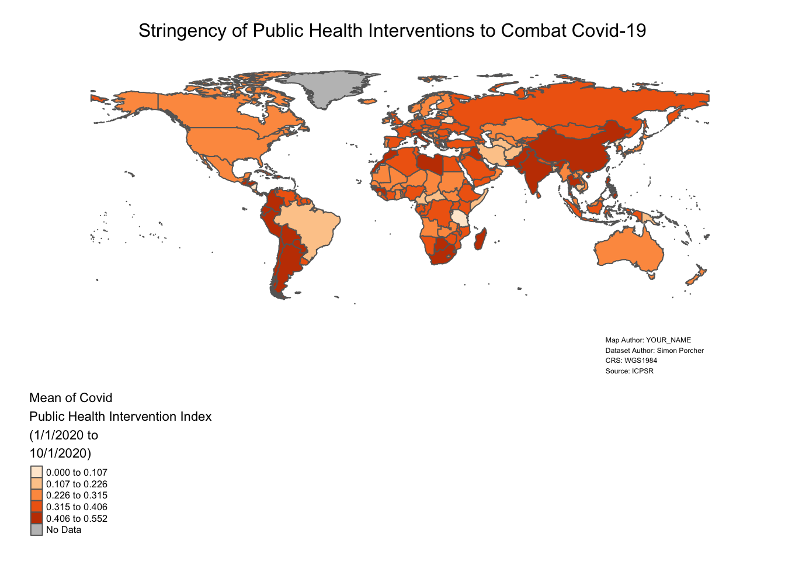

5 Practice Exercises
In this section you’ll have the opportunity to apply what you learned in the tutorial provided in Section 4, and practice some of your skills. The following three exercises are arrayed in order of increasing difficulty.
5.1 Practice Exercise 1
Modify the map we made in Section 4 in the following ways:
- Change the color scheme. What rationale informed your choice of this color scheme?
- Change the legend breaks. Why did you chose the legend breaks that you did?
- Replace your name with the current name in the “Map Credits” section.
What spatial patterns do you notice in this map? Are there any patterns of clustering or dispersion that you find interesting? Do you notice anything surprising or unexpected? And, what future research questions might this map suggest?
5.2 Practice Exercise 2
Use the same dataset we used in Section 4, but this time please make a map of the country-level average of the “Rigidity_Public_Health” variable.
What spatial patterns do you notice in this map? Are there any patterns of clustering or dispersion that you find interesting? Do you notice anything surprising or unexpected? And, what future research questions might this map suggest?
5.3 Practice Exercise 3
Refer to the following dataset, entitled “Worldwide Index of IPRs [Intellectual Property Rights] in Agriculture, 1961-2018”, which is archived on ICPSR and authored by Mercedes Campi amd Alessandro Nuvolari.
Download the dataset, and make a map that shows country-level variation in the “Total_Index” variable in the year 2018.
5.4 Sample Code for Practice Exercises
The sample code in this section assumes you’ve already loaded all of the packages discussed in the tutorial, and have correctly set your working directory to the directory in which the dataset(s) are located.
5.4.1 Sample Code for Exercise 2
The code below results in a dynamic webmap that represents cross-national variation in the scope of countries’ public health interventions (as measured by cross-national variation country-level average of the “Rigidity_Public_Health” variable), during the January to October 2020 time frame. The map uses a light orange to dark red color scheme in which lighter shades of orange represent low values of the index, and progressively darker shades of orange and red represent higher values of the index. Oceans in the dynamic map are represented with the color gray (a lighter shade of gray than what is used for countries without data), and the legend is located on the top-right of the map (above and to the right of Russia). The plus/minus buttons located on the top-left of the map can be used to zoom in and out of the map.
# Import "Dataset" sheet from ICPSR Excel file into R Studio, and assign the dataset to an object called "covid_data"
covid_data<-read_excel("Gov_Responses2Covid19_last.xlsx", sheet="Dataset")
# Brings spatial dataset of country boundaries into R environment using the rnaturalearth package and assigns it to object named "country_boundaries"
country_boundaries<-ne_countries(scale="medium", returnclass="sf")
# Deletes Antarctica from "country_boundaries" object
country_boundaries<-country_boundaries %>% filter(iso_a3 !="ATA")
# Selects "iso" and "Rigidity_Public_Health" variables from ICPSR Covid Dataset, and assigns this dataset to new object named "covid_data_public_health"
covid_data_public_health<-covid_data %>%
select(iso, Rigidity_Public_Health)
# Changes class of "Rigidity_Public_Health" field in "covid_data_public_health" from character to numeric
covid_data_public_health$Rigidity_Public_Health<-as.numeric(covid_data_public_health$Rigidity_Public_Health)
# Calculates country-level averages for "Rigidity_Public_Health" index, and then assigns this dataset of country-level averages to a new object called "covid_data_PH_avg".
covid_data_PH_avg<-covid_data_public_health %>% group_by(iso) %>%
summarize(mean_public_health=mean(Rigidity_Public_Health, na.rm=TRUE))
# Join dataset with country-level means for "Rigidity_Public_Health" index ("covid_data_PH_avg" ) to spatial dataset of world boundaries ("country_boundaries"), based on common 3-Digit ISO Codes; then relocate "name" and "mean_economic" fields to the beginning of the dataset so that they're displayed on the map
worldmap_covid_data_PH<-full_join(country_boundaries, covid_data_PH_avg, by=c("iso_a3"="iso")) %>%
relocate(name, mean_public_health)
# Make map and assign to new object called "covid_PH_webmap"
covid_public_health<-tm_shape(worldmap_covid_data_PH)+
tm_polygons(col="mean_public_health",
n=5,
style="jenks",
palette="Oranges",
textNA="No Data",
title="Mean of Covid \nPublic Health Intervention Index\n(1/1/2020 to\n10/1/2020)")+
tm_layout(frame=FALSE,
legend.outside=TRUE, # Puts legend outside map frame
legend.outside.position=c("bottom"),
main.title="Stringency of Public Health Interventions to Combat Covid-19",
main.title.size=1,
main.title.position="center",
inner.margins=c(0.06,0.10,0.10,0.08),
attr.outside=TRUE)+
tm_credits("Map Author: YOUR_NAME\nDataset Author: Simon Porcher\nCRS: WGS1984\nSource: ICPSR", # Sets text for map credits
position=c(0.78,0), # Specifies location of map credits
size=0.38) # Specifies font size of credits text
# display map object in view mode
covid_public_health
5.4.2 Sample Code for Exercise 3
# Load Tabular Data and assign to object named "IPR_data"
IPR_data<-read_excel("Index_IPR_Agriculture.xlsx", sheet="Total_Index")
View(IPR_data)
# Load Spatial Data and assign to object named "country_boundaries"
country_boundaries<-ne_countries(scale="medium", returnclass="sf")
View(country_boundaries)
# Delete Antarctica from "country_boundaries"
country_boundaries<-country_boundaries %>% filter(iso_a3 !="ATA")
# Check class of Index field in "IPR_data" and confirm it's numeric
class(IPR_data$`Total Index`)## [1] "numeric"# Select 2018 Observations from "IPR_data" and assign to new object named "IPR_data_2018"
IPR_data_2018<-IPR_data %>% filter(year==2018)
# View "IPR_data_2018" in R Studio Data Viewer
View(IPR_data_2018)
# Join "Datasets"IPR_data-2018" to "country_boundaries" based on common ISO codes, and then assign the product of the join to a new object named "spatial_IPR_2018."
spatial_IPR_2018<-full_join(country_boundaries, IPR_data_2018, by=c("iso_a3"="Country_code")) %>%
relocate(Country, 'Total Index')
# Make map of variation in agricultural IPR index in 2018, and assign to new object named "IPR_2018_map"
IPR_2018_map<-tm_shape(spatial_IPR_2018)+
tm_polygons(col="Total Index",
n=6,
style="jenks",
palette="PuBu",
title="Agriculture IPR\nIndex, 2018")+
tm_layout(frame=FALSE,
legend.outside=TRUE,
legend.outside.position=c("bottom"),
main.title = "Strength of Intellectual Property Protection in Agriculture, 2018",
main.title.position = "Center",
main.title.size=1,
inner.margins=c(0.06,0.10,0.10,0.08),
attr.outside=TRUE)+
tm_credits("Map Author: YOUR NAME\nDataset Author: Mercedes Campi\nCRS:WGS84\nSource:ICPSR",
position=c(0.78,0),
size=0.38)
# Open "IPR_2018_map"
IPR_2018_map![Choropleth world map showing cross-national variation in IPR index in 2018; light to dark-blue color scheme with lighter shades of blue representing lower values of the index and darker shades of blue representing higher values; countries without data are filled in with gray The map legend is a vertical bar that displays values using discrete color categories with 6 break points and intervals defined by the Jenks algorithm. The legend is displayed on the bottom-left of the map below and to the left of South America. There is no map frame surrounding the map. The legend is titled 'Agriculture IPR Index, 2018', and this title is placed over the vertical legend bar. The map's main title is 'Strength of Intellectual Property Protection in Agriculture, 2018', and is displayed in one line at the top of the map above the northern-most countries. The map map credits are split across four lines, and printed on the bottom-right of the map below Australia and New Zealand.](bookdownproj_files/figure-html/unnamed-chunk-58-1.png "Choropleth world map showing cross-national variation in IPR index in 2018; light to dark-blue color scheme with lighter shades of blue representing lower values of the index and darker shades of blue representing higher values; countries without data are filled in with gray The map legend is a vertical bar that displays values using discrete color categories with 6 break points and intervals defined by the Jenks algorithm. The legend is displayed on the bottom-left of the map below and to the left of South America. There is no map frame surrounding the map. The legend is titled 'Agriculture IPR Index, 2018', and this title is placed over the vertical legend bar. The map's main title is 'Strength of Intellectual Property Protection in Agriculture, 2018', and is displayed in one line at the top of the map above the northern-most countries. The map map credits are split across four lines, and printed on the bottom-right of the map below Australia and New Zealand.")